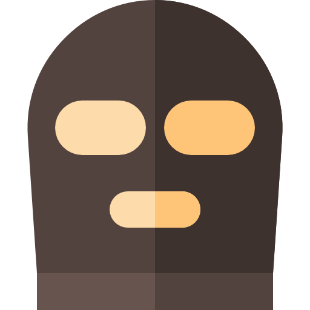

AKZ
HISTÓRIA
DO CS:GO

EQUIPES
OBJETIVO
MAPAS
ARMAS
UTILITÁRIOS
HISTÓRIA DO CS:GO
Counter Strike
(CS)
é um jogo eletrônico de tiro em primeira pessoa lançado em 1999 e desenvolvido por Mihn Le e Jess Cliffe como um "mod"
(conteúdo modificado de algum jogo de sua versão original)
de Half-Life, um jogo bastante famoso na época.
Após ser adquirido pela Valve Corporation
(atual desenvolverdora do jogo)
, Counter Strike se tornou um dos responsáveis pela massificação dos jogos por rede no começo do século, sendo considerado o grande responsável pela popularização das LAN Houses no mundo.
Com o passar dos anos, após a popularização do jogo, a Valve Corporation com o auxílio da Hidden Path Entertainment criou uma séria de versões para o Counter Strike. A mais popular foi o Counter Strike: Global Offensive lançado em 2012 como uma sequência de Counter Strike: Source, na qual contava com versões retrabalhadas de mapas clássicos, novos mapas, personagens e diversos modos de jogo.
Ao longo de cada uma de suas versões, o Counter Strike tem vindo a ser o ponto de referência definitivo do nível de perícia de um jogador. Diferentes jogadores de diferentes equipes ao redor do mundo competem entre si para classificar qual é a melhor equipe de todos os tempos
Muito mais do que apenas "um jogo", CS:GO se tornou um dos maiores e competitivos jogos eletrônicos de todos os tempos, toda a sua história e construção ao longo dos anos foi responsável por criar "lendas" e prestígio ao jogo. Devido a grande quantidade de jogadores hoje em dia, cada vez mais se tornou desafiador se destacar entre os melhores. Somente aqueles com experiência e resiliência são capazes de se sobresair e tomar as decisões certas para alcançar a vitória e se tornar um campeão.